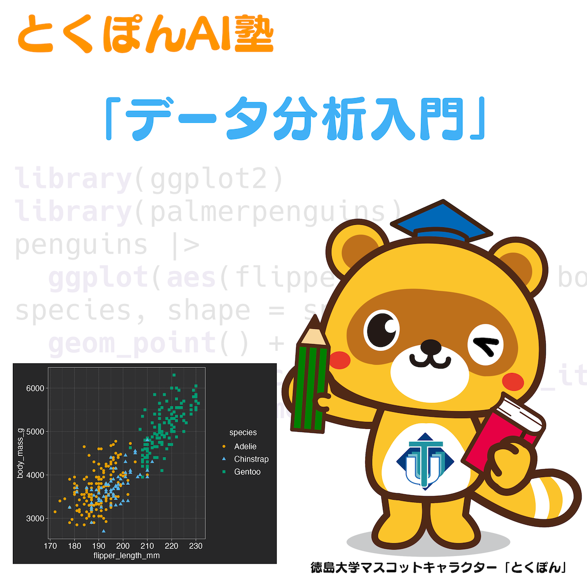
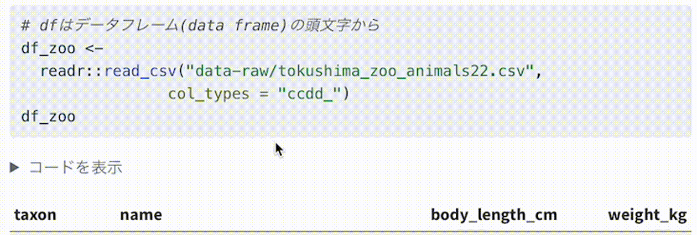

データ分析入門

前書き
このページは徳島大学デザイン型AI教育研究センターが 開催する、小中高生を対象にした「とくぽんAI塾 2022」のコースの一つである「データ分析入門」 の資料置き場です。
コースは基礎編と発展編の2つに分けられます。基礎編では、データ分析に必要な知識・背景の理解のための 素養を身につけることを目指します。発展編ではデータ分析の問題への挑戦として、回帰と分類問題について 取り組みます。 このコースでは、基礎から発展まで通して R言語を使ったデータ分析を行います。
まずデータ分析についての大まかな内容とデータ分析で扱われる課題について第1章で学びます。 次に第2章では、データの種類と扱い方、表現方法を身につけます。 第3章ではデータを要約し、伝えやすくするための方法を紹介します。 ここでは特に１つの変数について扱います。 第4章は２つの変数の関係を調べるための相関について理解を深めます。 基礎編の最終章となる第5章では、データ分析に欠かせないデータのグラフ化、可視化のノウハウを学びます。 ここでは一般的な統計グラフの他に地図による表現についても紹介します。 続く発展編では、回帰と分類についてそれぞれ課題を設定し、Rによるプログラミングとその出力の理解を目指します。
想定する読者
高等学校情報科における共通必履修科目「情報Ⅰ」を学習する高校生、また将来学習することになる中学生。
データ分析について簡易な内容で学びたい社会人
ここでは扱わない内容
- 統計の基礎となる確率
- データ分析に欠かせない行列、線形代数
初歩の数学の範囲で説明可能な内容を扱うことを目指します。
登場する動物について
とくぽんAI塾2022のテーマは「動物園」です。 そこでこのコースでも動物が登場します。
とくぽんによる解説
徳島大学マスコットキャラクターの「とくぽん」が解説を行います。 とくぽんによる解説には次の種類があります。
全般的な補足をコメントするよ。
とくぽんからの問題だよ。これまでの内容をおさらいして考えてみてね。
注意が必要な事柄がある場合に説明をするよ。
ご意見募集
この内容が分かりにくかった、読めないが漢字があったときには 気軽にコメントいただけると改善のために役立ちます。 コメントは GitHub issuesもしくはフォームから投稿をお願いします。
Rコードおよび実行環境
- R version 4.2.1
- macOS Monterey 12.4
このページはQuartoを使って作成されています。
ページ中のRのコードは下記のようにコードブロックで表示しています。 このコードブロックは右上にカーソルを移動させたときに表示されるアイコンをクリックすることで 内容がコピーされます。また、一部のコードについては非表示の状態のものもあります。 コードを表示とある場合、クリックによってコードが表示されます。

renvによるパッケージ管理、GitHub actionsによるページのビルドを行っています。
ライセンス
MIT